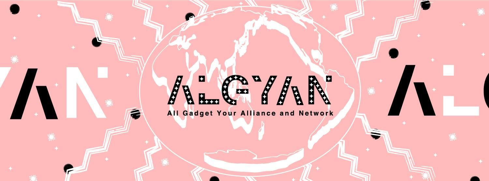
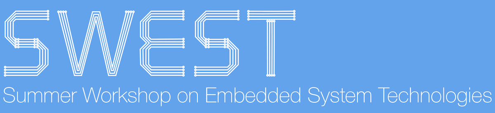

高瀬 英希 (TAKASE hideki)
所属
連絡先
SNS/Icon
Community
略歴
研究分野
担当講義
趣味
プロフィール
研究内容
業績・活動
リンク(記事掲載・講演動画等)
所属
本務
：
東京大学
准教授
大学院情報理工学系研究科
|>
システム情報学専攻
兼担：
工学部計数工学科
|>
システム情報工学コース
兼務
国立研究開発法人 科学技術振興機構 さきがけ研究者
一般社団法人ROSCon JP 理事
特定非営利活動法人TOPPERSプロジェクト 運営委員
連絡先
〒113-8656 東京都文京区本郷7-3-1
東京大学工学部6号館2階254号室
TEL: 03-5841-0495
E-mail: takasehideki (at) hal.ipc.i.u-tokyo.ac.jp
SNS/Icon
Community
NervesJP
ROS Japan Users Group (rosjp)
IoT ALGYAN

SWEST

略歴
1984年9月 愛知県生まれ
2003年3月 愛知県立一宮高等学校普通科 卒業
2007年3月 名古屋大学 工学部電気電子情報工学科 卒業（学士）
2009年3月 名古屋大学 大学院情報科学研究科 博士課程前期課程 修了（修士）
2009年4月 日本学術振興会 特別研究員DC1（〜2012年3月）
2012年3月 名古屋大学 大学院情報科学研究科 博士課程後期課程 修了・博士(情報科学) 取得
2012年4月 京都大学 大学院情報学研究科 助教
2015年10月 東京海洋大学 非常勤講師（講義担当：オペレーティングシステム論・2016年3月まで）
2018年10月 国立研究開発法人 科学技術振興機構 さきがけ研究者
2019年11月 理化学研究所 計算科学研究センター アーキテクチャ開発チーム 客員研究員（〜2021年3月）
2019年11月 京都大学 大学院情報学研究科 准教授（〜2021年3月）
2021年4月 東京大学 大学院情報理工学系研究科 准教授
研究分野
組込みシステム向け消費エネルギー最適化技術
プログラマブルSoCのためのソフトウェア志向のシステム設計環境
SWORDS: SoftWare ORiented Design and Synthesis framework for Zynq (on GitHub)
ROS (Robot Operating System)を活用したロボットシステムの開発手法
mROS: a light-weight runtime environment of ROS nodes on embeddded devices (on GitHub)
関数型言語ElixirによるIoTシステム開発環境
箱庭：IoT/クラウドロボティクス時代の仮想シミュレーション環境
担当講義
学部
大学院
過去の担当
3年S1S2：計算システム論第一
3年A1A2：計算システム論第二
4年S1S2：システム情報工学演習第三
T.B.A
京都大学
学部３回生前期：オペレーティングシステム
学部２回生後期：計算機科学実験及演習２（ハードウェア実習担当）
学部３回生前期：
計算機科学実験及演習３（ハードウェア実習担当）
大学院前期：並列計算機アーキテクチャ
大学院後期：ハードウェアアルゴリズム
趣味
Rock & Rock
Rock: WhiskeyやらSpiritsやら焼酎やらを氷で割って
Rock: 8ビートの音楽を地下室とか山奥とかで爆音で浴びて